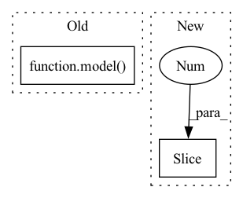

Pattern ID :6947
Before Change
//model(input)
model(input.detach())
model( fliplr(input.detach()))
del input
for bn_module in momenta.keys():After Change
for input in loader:
if isinstance(input, (list, tuple)):
input = input[0]
xyz = input[:,:,0 :3 ].contiguous()
rgb = input[:,:,3:].contiguous()
if device is not None:
input = input.to(device)In pattern: SUPERPATTERN
Frequency: 4
Non-data size: 2
Instances Fragment ID: 23280002
Project Name: layumi/person-reid-3d
Commit Name: 1a3d7816f8e8ef784c4fca45d6be9450e9653d36
Time: 2022-09-28
Author: zdzheng12@gmail.com
File Name: swa_utils.py
M Class Name: AnonimousClass
N Class Name: AnonimousClass
M Method Name: update_bn(3)
N Method Name: update_bn(3)
M Parent Class:
N Parent Class:
M File Name: swa_utils.py
N File Name: swa_utils.py
M Start Line: 221
M End Line: 231
N Start Line: 158
N End Line: 165
Before Change
sens = create_input(shape + [2]).cpu()
mask = create_input([shape[0]] + [1] + shape[2:] + [1]).round().int().cpu()
out = model( img, kspace, mask, sens) [0][-1]
assert list(out.shape) == [shape[0]] + [2] + shape[2:]
After Change
}
if input_image_is_None:
if image_init == "input_image":
inputs["initial_image"] = create_input([shape[0]] + shape[2: ] + [2]).cpu()
elif image_init == "input_kspace":
inputs["initial_kspace"] = create_input(shape + [2]).cpu()
if image_init is None and input_image_is_None: Fragment ID: 23280000
Project Name: directgroup/direct
Commit Name: 78cdd530b3c93e31c11d8963880e6329f0989243
Time: 2021-12-27
Author: georgeyiasemis@hotmail.com
File Name: tests/tests_nn/test_rim.py
M Class Name: AnonimousClass
N Class Name: AnonimousClass
M Method Name: test_rim(11)
N Method Name: test_rim(9)
M Parent Class:
N Parent Class:
M File Name: tests/tests_nn/test_rim.py
N File Name: tests/tests_nn/test_rim.py
M Start Line: 85
M End Line: 92
N Start Line: 74
N End Line: 107
Before Change
if args.mlm:
outputs = model(inputs, masked_lm_labels=labels, position_ids=position_ids, token_type_ids=segment_ids)
else:
outputs = model( inputs, labels=labels, position_ids=position_ids, token_type_ids=segment_ids)
loss = outputs[0] // model outputs are always tuple in transformers (see doc)
if args.n_gpu > 1:
loss = loss.mean() // mean() to average on multi-gpu parallel trainingAfter Change
// remove this once they add it
decoder_input_ids = labels[:, :-1].contiguous()
decoder_input_ids[decoder_input_ids == args.mlm_ignore_index] = tokenizer.pad_token_id
lm_labels = labels[:, 1 :].clone()
model_inputs["decoder_input_ids"] = decoder_input_ids
model_inputs["lm_labels"] = lm_labels
Fragment ID: 23279995
Project Name: stanford-oval/genienlp
Commit Name: a93dfc909991b9e688e31ca66a42706915d63b67
Time: 2020-05-04
Author: mehrad@stanford.edu
File Name: genienlp/paraphrase/run_lm_finetuning.py
M Class Name: AnonimousClass
N Class Name: AnonimousClass
M Method Name: train(4)
N Method Name: train(4)
M Parent Class:
N Parent Class:
M File Name: genienlp/paraphrase/run_lm_finetuning.py
N File Name: genienlp/paraphrase/run_lm_finetuning.py
M Start Line: 170
M End Line: 185
N Start Line: 173
N End Line: 200
Before Change
// append to next input_ids
next_input_ids = paddle.concat([input_ids, next_tokens], axis=-1)
output_from_no_past = model( next_input_ids)
output_from_past = model(next_tokens, use_cache=True, cache=past)[0]
// select random slice
random_slice_idx = ids_tensor((1,), output_from_past.shape[-1]).item()After Change
self.parent.assertTrue(len(outputs) == len(outputs_use_cache_conf))
output, past = outputs[:2 ]
// create hypothetical next token and extent to next_input_ids
next_tokens = ids_tensor((self.batch_size, 1), config["vocab_size"], dtype="int64") Fragment ID: 23279997
Project Name: paddlepaddle/paddlenlp
Commit Name: db3bde142ca2da76bfc701cd4ecc17140c248060
Time: 2022-12-06
Author: 40912707+Yam0214@users.noreply.github.com
File Name: tests/transformers/gpt/test_modeling.py
M Class Name: GPTModelTester
N Class Name: GPTModelTester
M Method Name: create_and_check_gpt_model_past(4)
N Method Name: create_and_check_gpt_model_past(4)
M Parent Class:
N Parent Class:
M File Name: tests/transformers/gpt/test_modeling.py
N File Name: tests/transformers/gpt/test_modeling.py
M Start Line: 185
M End Line: 200
N Start Line: 186
N End Line: 203